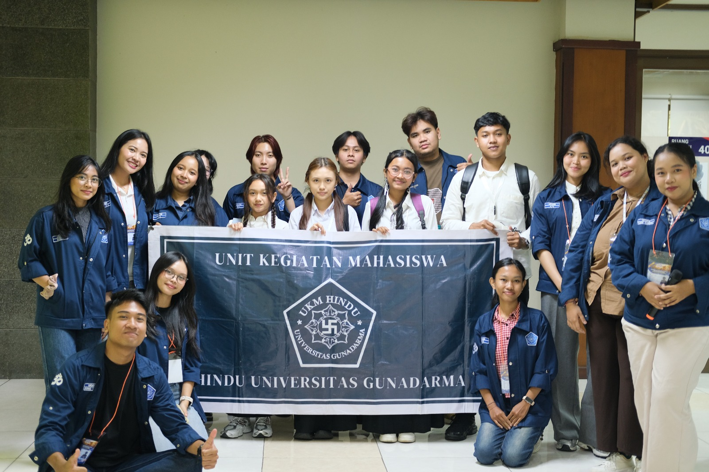
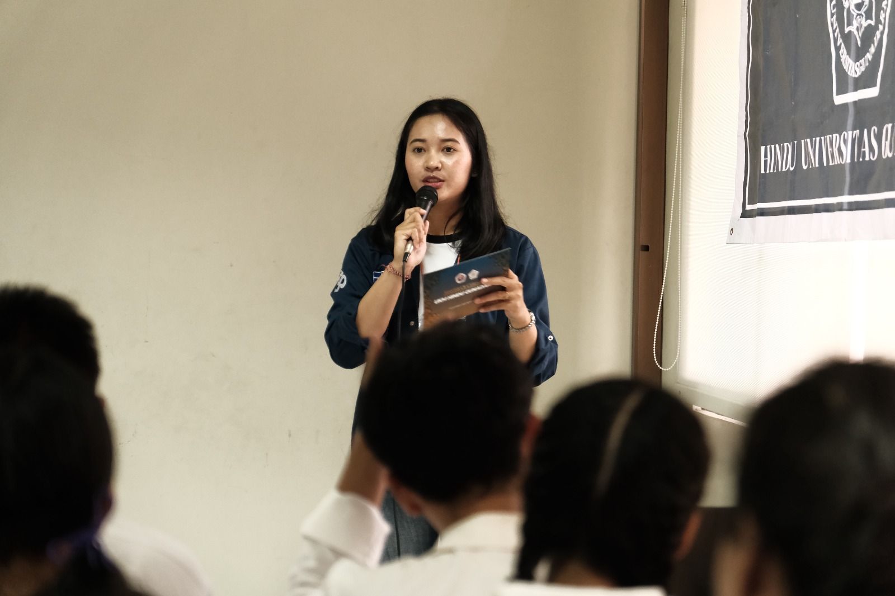
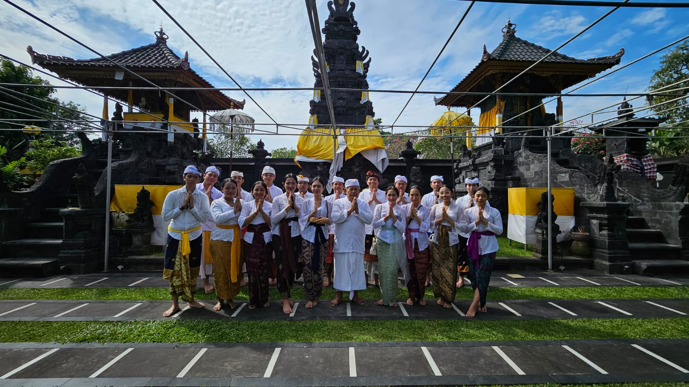

Sekretaris Umum
Unit Kegiatan Mahasiswa Hindu Gunadarma (UKMHG)
Periode 2026/2027
Pencapaian :
- Penyusunan proposal program kerja (proker) UKMHG.
- Penyusunan laporan pertanggungjawaban (LPJ) tepat waktu.
- Membuat dan manajemen surat masuk dan surat keluar untuk keperluan proker UKMHG.